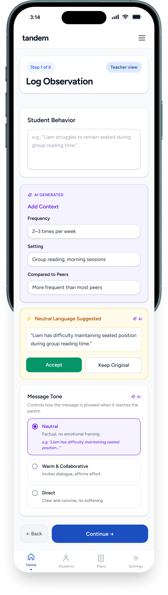

Decision · 01
A calm, three-step journey
Insight
Everything gets said at once, late, at a conference. Teachers are short on time and parents feel ambushed.
Decision
Split it into three small steps: the teacher notes what they saw, the parent gets a clear message, and together they decide what to do.
Outcome
Nobody has to carry the whole conversation at once. The teacher we tested with, and all three personas, found the flow easy to follow.
3 acts

Observe: the teacher logs one structured observation.